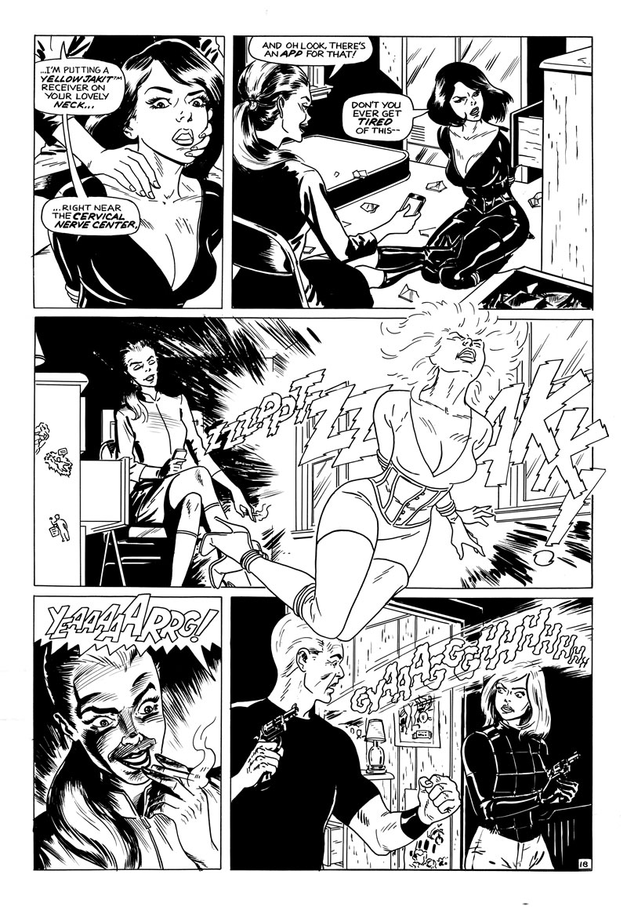

Stop That Panzer Woman!
Agent K's first solo mission: stop an alien invasion by going deep undercover in a UNIX war zone. Armed only with her wits and laxtex super-suit, the High-heeled Heroine faces a global-scale army with nothing to lose.
Inky Stories #5: Outside Front Cover
Inspiration from Classic Marvel Covers
The design is based on Marvel's early-to-mid 1970s shell, specifically for The Avengers. My first concept was the double-page spread fight scene, but the "Destroyer of Worlds" concept seemed more dramatic. This concept is based on the lonley warrior feeling of the Nick Fury, Agent of SHIELD and Tales of Suspense covers.
Inspiration from Modern Marvel Covers
Colorists from the pre-digital, flat color dots era would have killed for today's production values.
Agent K's New Logo
It's based on the font Interstate Black Compressed, but modified by hand (something I did a lot in the pre-Photoshop days.) The "G" is wider for clarity. Straight lines were easy, curved parts were not. Final art approximately 12 inches wide, ink on vellum. I got the idea of presenting the original art with a ruler from Alex Jay's "Anatomy of a Logo" series.
Cover Girls of the Silver Age
Female characters were treated as children or hostages to be rescued by the male heroes (while being abducted and threatened by Marvel's third-string villains.) Despite being in the era of Women's and Civil Rights, the major publishers still regurgitated fan bias of the 1930s pulp magazine era.
Cover Girls of the Golden Age

{kind=link}
{kind=link}
{kind=link}
{kind=link}
{kind=link}
{kind=link}
{kind=link}
{kind=link}
{kind=link}
{kind=link}
{kind=link}
{kind=link}
It wasn't always like this. Some female characters were portrayed better before the 1960s. Examples include Miss Fury, Black Cat Comics, The Phantom Lady, and pulps like Thrilling Comics. The ladies are still beautiful and in danger, but aren't waiting around to be rescued! Perhaps the devolution was fallout from World War II and the 1954 rise of the Comics Code Authority.
Inky Stories #5: Inside Front Cover
Stop That Panzer Woman!: Page 1 of 20
Stop That Panzer Woman!: Page 2 of 20
Stop That Panzer Woman!: Page 3 of 20
Stop That Panzer Woman!: Page 4 of 20
Stop That Panzer Woman!: Page 5 of 20
Stop That Panzer Woman!: Page 6 of 20
{kind=link}
Stop That Panzer Woman!: Page 7 of 20

Stop That Panzer Woman!: Page 8 of 20
Stop That Panzer Woman!: Page 9 of 20
Stop That Panzer Woman!: Page 10 of 20
Stop That Panzer Woman!: Page 11 of 20
Stop That Panzer Woman!: Page 12 of 20
Stop That Panzer Woman!: Page 13 of 20
Stop That Panzer Woman!: Page 14 of 20
Stop That Panzer Woman!: Page 15 of 20
Stop That Panzer Woman!: Page 16 of 20
Stop That Panzer Woman!: Page 17 of 20
Stop That Panzer Woman!: Page 18 of 20
Stop That Panzer Woman!: Page 19 of 20
Stop That Panzer Woman!: Page 20 of 20
Inky Stories #5: Letters Page 1 of 2
Inky Stories #5: Letters Page 2 of 2
Inky Stories Pin-Up: The Director
Inky Stories Pin-Up: Delgada
Inky Stories #5: Inside Back Cover
Inky Stories #5: Corner Pose Art
Story Notes
This is a prequel to "The Null Device," in which the mysterious Agent K had a relatively minor role until the end. She was nothing more than my desire to draw a latex bondage scene at first. As the story developed, keeping her as just a damsel to be rescued seemed so wasteful. By then, however, there wasn't any room to flesh out her character. And I didn't know her yet. Until last year, Agent K was a bondage drawing looking for character.
Years later, I wrote the next Agent K story Enter...General Zaq!" This began as a comparison between modern and classic comics. That began as a film noir, but developed in an Agent K superheroine story. While its premise is a bit convoluted, it does enhance her character. She had to be clever, to figure out how to win when the first plans failed. Since the entire story's a fight scene, her character is only defined by action and banter.
"Stop That Panzer Woman!" tries to address unanswered questions: If she's such a bad-ass, how did she get captured in "The Null Device?" Did she tell her father, the Director, about her adventures? Where does she live? Why does she fight at all...especially in tights and 6-inch heels? While a lot of these questions are still unanswered, "Stop That Panzer Woman!" passes the Bechdel test in flying colors.
Influences on Agent K's superheroine persona are from the Golden Age (Miss Fury, The Black Cat,) Silver Age (The Black Widow, Yvonne Craig's Batgirl, Honey West, Emma Peel from The Avengers,) and modern Goth heroines (La Femme Nikita, Charlize Theron's Aeon Flux, Trinity from The Matrix, Selene of Underworld.) Their common priority is proving their toughness and intelligence, while taunting and looking fantastic.
Hopefully future stories will define her private and social personality. What does she think is funny? What's her biggest nightmare, her worst fear, what drives her every word and action? I'm waiting for that "character writes herself" trope to kick in, but will probably have to discover the answers through a lot of writing and observation. Short of that, let's hope this story is at least entertaining.
Tools and Materials
- 12" x 18" live area on Strathmore 500 bristol paper
- Blick Black Cat india ink
- Short-handle round #2 sable brush
- Ruling pen (borders)
- Speedball nib #512 (straight lines, details)
- Speedball B6 and B5 1/2 (classic lettering)
- Ames Lettering Guide (4.0 even-spaced calibration)
- Adobe Photoshop (production)
Dave M!, blogging from 1369 Coffee House, Inman Square.